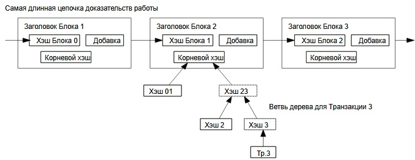

8. Упрощенная проверка платежей
Верификация транзакций возможна без запуска полнофункционального
узла. Пользователю необходимо лишь хранить заголовки блоков самой
длинной цепочки, которую он получил от других узлов, и запрашивать хэш-
поддерево для необходимой транзакции. Он не может проверить корректность
транзакции самостоятельно, но получив ссылку на блок, в котором она находится, он
может убедиться в том, что этот блок и все последующие приняты и подтверждены
сетью.

На такой метод проверки можно полагаться, пока сеть хотя бы наполовину
находится под контролем честных участников, то есть пока злоумышленник не
завладеет большими ресурсами. Обычные узлы могут проверять транзакции
самостоятельно, но если нападающий генерирует самую длинную цепь
блоков, то своими сфабрикованными транзакциями он может
скомпроментировать упрощенную схему. Одной из стратегий противодействия
этому может быть рассылка сигналов тревоги от обычных пиров, которые получают
«ложный» блок. Такой сигнал будет заставлять программу-клиент загружать блок
полностью, чтобы самостоятельно подтверждать некорректность данных.
Компании, часто принимающие платежи, возможно, будут подключаться к сети в
обычном режиме для большей независимости, безопасности и быстроты проверки.